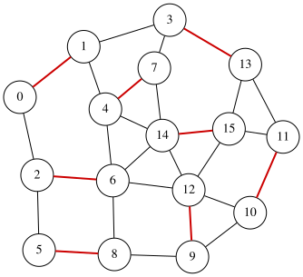

Maximum Matching Problem
A matching in an undirected graph is a set of edges such that no two edges share a common node. Given an undirected graph $G=(V,E)$, the Maximum Matching problem aims to find a matching $S \subseteq E$ that contains the maximum number of edges.
Assume that the graph has $n$ vertices and $m$ edges, and that the edges are labeled $0,1,\ldots,m-1$. We introduce $m$ binary variables $x_0, x_1, \ldots, x_{m-1}$, where $x_i=1$ if and only if edge $i$ is selected (i.e., belongs to $S$) ($0\le i\le m-1$). The objective is to maximize the number of selected edges:
\[\begin{aligned} \text{objective} &= \sum_{i=0}^{m-1} x_i . \end{aligned}\]To enforce the matching condition, we penalize any pair of selected edges that share a node. Let $\mathcal{P}$ be the set of unordered pairs $(e_1,e_2)$ of distinct edges that share a common endpoint. Then the following penalty takes value $0$ if and only if the selected edges form a matching:
\[\begin{aligned} \text{constraint} &= \sum_{\{e_1,e_2\}\in \mathcal{P}} x_{e_1}x_{e_2}. \end{aligned}\]We construct a QUBO expression $f$ by combining the objective and the penalty as follows:
\[\begin{aligned} f &= -\text{objective} + 2 \times \text{constraint}. \end{aligned}\]Here, the penalty term is multiplied by 2 to ensure that violating the matching constraint is more costly than increasing the objective. An assignment minimizing $f$ therefore corresponds to a maximum matching of $G$.
QUBO++ program for the maximum matching
Based on the formulation above, the following QUBO++ program constructs the QUBO expression $f$ for a 16-node graph and solves it using the Exhaustive Solver
#define MAXDEG 2
#include <qbpp/qbpp.hpp>
#include <qbpp/exhaustive_solver.hpp>
#include <qbpp/graph.hpp>
int main() {
const size_t N = 16;
std::vector<std::pair<size_t, size_t>> edges = {
{0, 1}, {0, 2}, {1, 3}, {1, 4}, {2, 5}, {2, 6}, {3, 7},
{3, 13}, {4, 6}, {4, 7}, {4, 14}, {5, 8}, {6, 8}, {6, 12},
{6, 14}, {7, 14}, {8, 9}, {9, 10}, {9, 12}, {10, 11}, {10, 12},
{11, 13}, {11, 15}, {12, 14}, {12, 15}, {13, 15}, {14, 15}};
const size_t M = edges.size();
auto x = qbpp::var("x", M);
auto objective = qbpp::sum(x);
auto constraint = qbpp::toExpr(0);
for (size_t i = 0; i < M; ++i) {
for (size_t j = i + 1; j < M; ++j) {
if (edges[i].first == edges[j].first ||
edges[i].first == edges[j].second ||
edges[i].second == edges[j].first ||
edges[i].second == edges[j].second) {
constraint += x[i] * x[j];
}
}
}
auto f = -objective + 2 * constraint;
f.simplify_as_binary();
auto solver = qbpp::exhaustive_solver::ExhaustiveSolver(f);
auto sol = solver.search();
std::cout << "objective = " << objective(sol) << std::endl;
qbpp::graph::GraphDrawer graph;
for (size_t i = 0; i < N; ++i) {
graph.add_node(qbpp::graph::Node(i));
}
for (size_t i = 0; i < M; ++i) {
auto edge = qbpp::graph::Edge(edges[i].first, edges[i].second);
if (sol(x[i])) {
edge.color(1).penwidth(2.0);
}
graph.add_edge(edge);
}
graph.write("maxmatching.svg");
}
This program creates the expressions objective, constraint, and f, where f is the negated objective plus a penalty term.
The Exhaustive Solver minimizes f, and an optimal assignment is stored in sol.
To visualize the solution, a GraphDrawer object graph is created and populated with nodes and edges.
In this visualization, selected edges in $S$ (i.e., edges $i$ with $x_i=1$) are highlighted.
The resulting graph is rendered and stored in the file maxmatching.svg:
